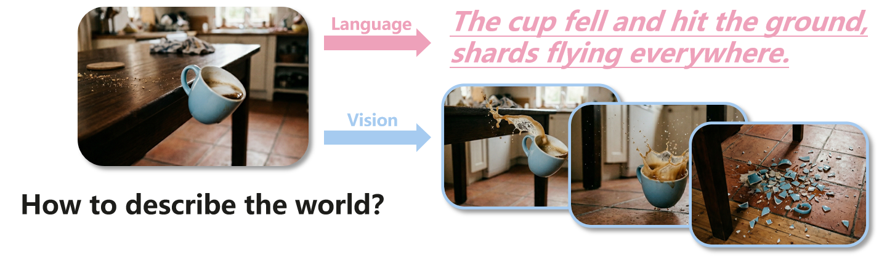
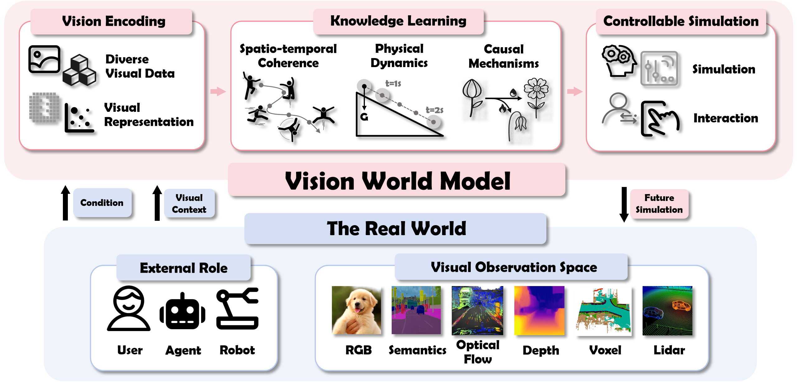
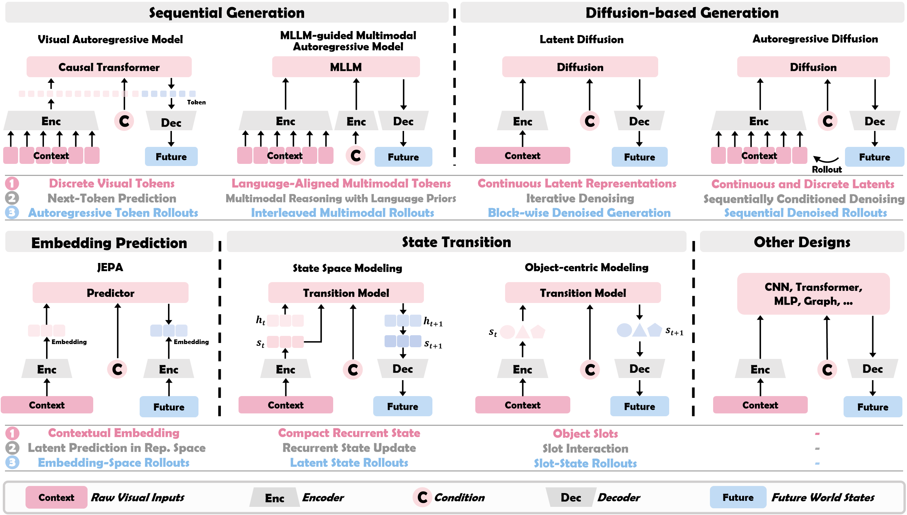
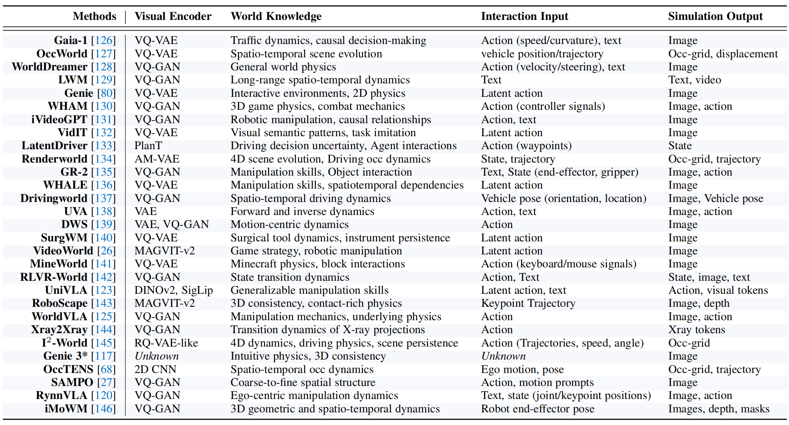
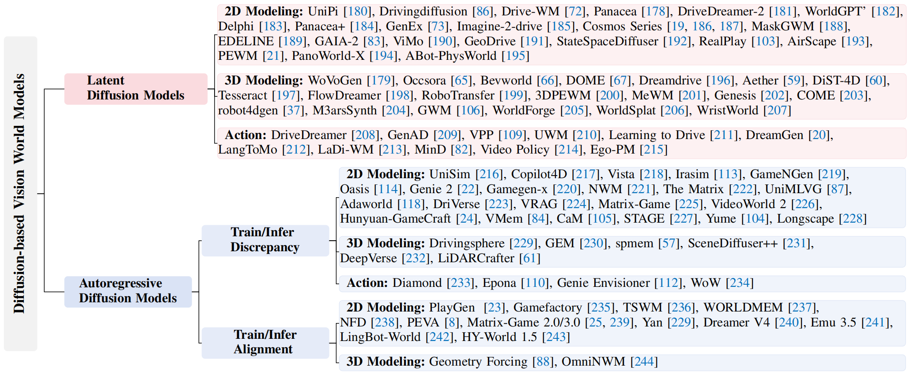
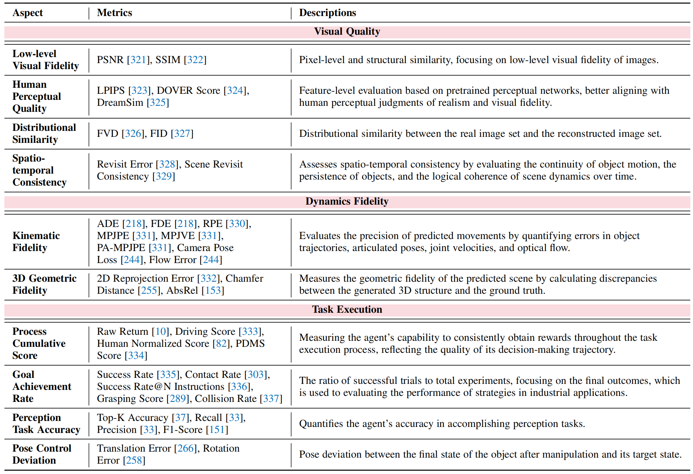
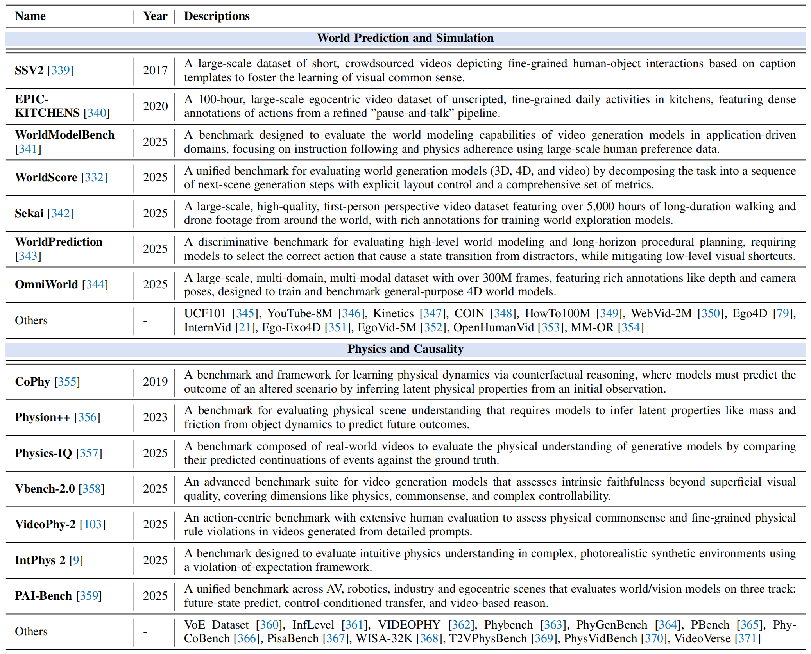
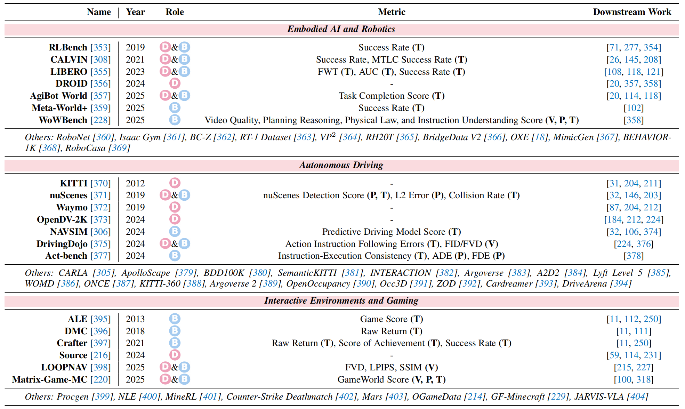
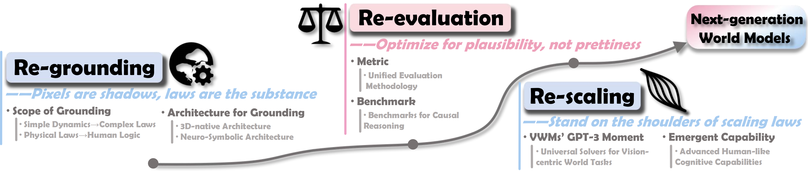

🚀 Motivation: Why a Vision-Centric Survey?
Visual observation provides the most direct evidence of how the world changes over time, capturing fine-grained dynamics, like how a glass falls and scatters upon impact, that language alone cannot fully specify.

Figure 2: How to describe the world?
World models have become a major focus of contemporary AI research, with recent progress emerging from diverse communities such as generative modeling, representation learning, embodied intelligence, and autonomous driving.
Although visual signals are now widely used across these paradigms, vision is still often treated merely as an input modality, rather than the central factor that shapes how a world model should represent the world, learn world knowledge, and be evaluated.
Within this landscape, current research has largely evolved along three major directions:
- Video generation methods focus on modeling appearance (e.g., Diffusion, Autoregressive) to achieve high visual fidelity and continuity.
- State transition approaches compress visual signals into compact states (e.g., SSMs) to serve as latent dynamics simulators for planning and control.
- Embedding prediction/JEPA-style approaches forecast in latent spaces (e.g., JEPA), bypassing pixel details to prioritize semantic understanding.
These divergent goals lead to inconsistent terminology and incomparable metrics. Existing surveys, while valuable, still do not solve this fragmentation.
- Application-focused surveys (e.g., in robotics or autonomous driving) provide depth but lack a systematic analysis of VWM as a standalone technology.
- Broad conceptual surveys offer high-level overviews but treat visual input as a passive assumption rather than the active design challenge it is.
To fill these gaps, we argue that addressing the field's fragmentation calls for a shift in perspective: treating the visual nature of the world not as a passive input challenge, but as the central design driver for world modeling.
🧩 Conceptual Framework
At its core, a VWM is defined as follows:
A Vision World Model (VWM) is an AI model that learns world knowledge from visual data and generates future world states conditioned on interaction.
Formally, a VWM can be seen as a probabilistic model \( f_{\theta} \) that predicts the distribution of future states given observed visual context and interactive conditions:
$$
p(\mathcal{S}_{t+1:T}| v_{0:t}, c_{t}) = f_{\theta} (\mathcal{E}(v_{0:t}), c_{t})
$$
where \( v_{0:t} \) represents the sequence of visual observations from time \( 0 \) to \( t \), and \( c_{t} \) represents current conditions (e.g., agent actions, language instructions, or control signals). \( \mathcal{E}( \cdot ) \) denotes the visual encoder that maps raw inputs into representations.
\( \mathcal{S}_{t+1:T} \) denotes future world states, which may take different forms depending on the modeling paradigm, including future frames, latent states, or other meaningful attributes (e.g., depth, flow, occupancy, 3D primitives, or trajectories).
Based on this, we establish a conceptual framework that decomposes VWM into three essential components:

Figure 3: A unified framework for Vision World Models (VWMs). A VWM encodes visual observations, learns structured world knowledge about how the world changes, and performs future simulation conditioned on interaction.
- (1) Vision Encoding: How diverse visual signals are transformed into world representation.
- (2) Knowledge Learning: What world knowledge are learned, progressing from spatio-temporal coherence to physical dynamics and causal mechanisms.
- (3) Controllable Simulation: How VWM performs controllable simulation conditioned on actions, language, or other interaction prompts.
🗺️ Taxonomy of VWM Designs
We provide an in-depth analysis of
VWMs' four major architectural families, applying our three-component framework to compare their
underlying mechanisms:

Figure 4:
A taxonomy of VWM designs is organized into four architectural families with seven sub-designs.
For each sub-design, the upper panel illustrates its typical input--output pipeline (from visual context and conditions to future outputs).
The lower panel highlights its key design choices under the three components of our framework (Section 2):
Vision Encoding: what form observations are encoded into;
Knowledge Learning: through what mechanism structured world knowledge is learned;
Controllable Simulation: what form the future rollouts take.
-
Sequential Generation
- Visual Autoregressive Modeling: Discretizes raw signals into a sequence of visual tokens and learns world knowledge via next-token prediction, enabling long-term generation through autoregressive rollouts.
- MLLM-guided Multimodal Autoregressive Model: Maps observations into language-aligned tokens to leverage MLLM reasoning power, producing an interleaved multimodal stream of visual futures and textual plans.
-
Diffusion-based Generation
- Latent Diffusion: Views modeling as a denoising process within compressed continuous latents, generating holistic, high-fidelity video clips in a non-sequential, all-at-once manner.
- Autoregressive Diffusion: A hybrid design that employs causal denoising conditioned on historical context to generate sequential denoised latents, ensuring both temporal consistency and visual quality.
-
Embedding Prediction
- JEPA: A non-generative paradigm that encodes observations into contextual embeddings and learns knowledge via latent prediction, providing efficient representations for planning without pixel reconstruction.
-
State Transition
- State-Space Modeling: Compresses visual history into a compact recurrent state and models knowledge as linear updates, enabling efficient long-horizon state rollouts.
- Object-Centric Modeling: Decomposes observations into discrete object slots and learns world knowledge through slot interaction, allowing for generalization to novel object combinations.

Table 1: Examples of visual autoregressive modeling VWMs.

Figure 5: Examples of diffusion-based (latent diffusion, autoregressive diffusion) VWMs.
📊 Evaluation System
We provide an extensive review of the evaluation landscape, cataloging metrics and distinguishing between datasets and benchmarks types.
Figure 6: Overview of the evaluation systems of VWMs.
Metrics
- Visual Quality: Assess the visual consistency of the simulation.
- Dynamics plausibility: Probe the model's adherence to physical laws.
- Task Performance: Measure model's overall effectiveness in downstream tasks.

Table 2: Summary of evaluation metrics for VWMs.
Datasets and Benchmarks
-
Foundational World Modeling: Foundational benchmarks designed to evaluate core capabilities:
- General World Prediction and Simulation
- Physics and Causality Benchmark
-
Domain-specific World Modeling: Datasets and testbeds tailored for high-impact downstream applications:
- Embodied AI and Robotics
- Autonomous Driving
- Interactive Environments and Gaming

Table 3: Foundational world modeling datasets and benchmarks.

Table 4: Domain-specific world modeling datasets and benchmarks.
💡 Challenges and Future Directions
We organize our analysis around three interconnected calls to action for the next-generation world models:

Figure 7: Overview of the challenges and future directions for the next-generation world models.
- Re-grounding: move beyond appearance-driven imitation toward stronger grounding in world knowledge, including richer physical interactions, geometry-aware modeling, neuro-symbolic hybrid designs, and human-centered rules and conventions.
- Re-evaluation: move beyond visual fidelity toward meaningful evaluation of plausibility, through better benchmarks, judge models, and execution-based protocols that assess physical consistency, causal reasoning, and complex dynamics.
- Re-scaling: rethink scaling as a path to stronger world modeling capabilities, through pretraining scaling toward generalist VWMs and inference-time scaling that enables reasoning before generation.